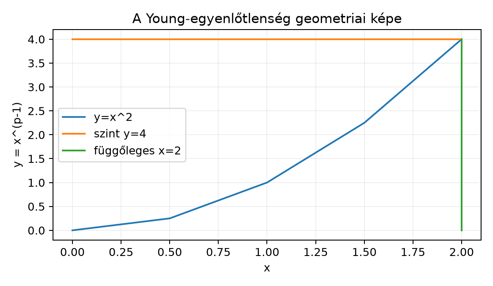

Az előző alfejezetben bevezettük az
-tereket
és az
jelölést. Két kérdés azonban nyitva maradt. Az első: ha
és
,
akkor mikor integrálható a szorzatuk, és milyen
becslést tudunk adni a szorzat integráljára? A második: az
kifejezés tényleg norma-e, azaz teljesíti-e a
háromszög-egyenlőtlenséget? Az első kérdésre a Hölder-, a másodikra a
Minkowski-egyenlőtlenség adja meg a választ. Mindkettő mögött egy nagyon
egyszerű, numerikus egyenlőtlenség, a Young-egyenlőtlenség áll, ezért
ezt vizsgáljuk meg először.
12.2.2 Szemléletes kép: a
Young-egyenlőtlenség mint terület
Rajzoljuk fel a síkon az
görbét, ahol
.
Mivel az inverz függvény
,
a két görbe ugyanazt az alakzatot adja, csak a két tengely felől nézve.
Ha kijelölünk egy
és egy
számot, akkor a
téglalap területe
.
A görbe alatti terület
-tól
-ig
a másik irányból számolt terület pedig
A geometriai szemlélet azt sugallja, hogy a téglalap területe mindig
legfeljebb akkora, mint ennek a két területnek az összege. Ez éppen a
Young-egyenlőtlenség.

A Young-egyenlőtlenség geometriai képe -
p=3, q=3/2, a=2, b=4; a két görbe alatti terület összege éppen ab=8,
mert b=a^(p-1).
Az ábrán a
esethez tartozó
görbét látjuk,
és
választással. A világos téglalap területe
;
a görbe alatti terület
,
a másik oldalról számolt terület
.
A kettő összege pontosan
,
mert a
egyenlőség most fennáll. Ha
ennél kisebb vagy nagyobb, a két terület összege a téglalap területénél
határozottan nagyobb.
12.2.3 A Young-egyenlőtlenség
Definíció. Legyen
.
A
kitevőhöz tartozó konjugált kitevő (conjugate exponent)
az a
szám, amelyre
Ekvivalensen
.
Például
esetén
;
esetén
;
esetén
.
Tétel (Young-egyenlőtlenség). Legyen
,
és legyen
a
konjugált kitevője. Ekkor minden
valós számra
Egyenlőség a pozitív
esetben pontosan akkor áll fenn, ha
.
Bizonyítás. Ha
vagy
,
akkor a bal oldal
,
a jobb oldal pedig nemnegatív, tehát az egyenlőtlenség nyilvánvaló.
Tegyük fel, hogy
.
Az exponenciális függvény szigorúan konvex, mert a második deriváltja
pozitív. Ezért bármely
és
esetén
Válasszuk a
,
,
,
értékeket. Ekkor a bal oldal:
A jobb oldal pedig
Ezzel az egyenlőtlenséget beláttuk. Mivel az exponenciális függvény
szigorúan konvex, egyenlőség pontosan akkor áll, ha
,
azaz
.
Ez ekvivalens a
feltétellel, mert
.
∎
12.2.4 A Hölder-egyenlőtlenség
A Young-egyenlőtlenség teszi lehetővé, hogy két függvény szorzatának
-normáját
a tényezők
-
és
-normájával
becsüljük.
Tétel (Hölder-egyenlőtlenség). Legyen
,
és legyen
a
konjugált kitevője. Ha
és
,
akkor
,
és
Az
,
esetben a megfelelő állítás
;
ezt most nem bizonyítjuk külön, mert a lényegi eset az
.
Bizonyítás. Ha
,
akkor
majdnem mindenütt, és mivel
majdnem mindenütt véges,
majdnem mindenütt. Így az integrál
.
Hasonlóan járunk el, ha
.
Tegyük fel tehát, hogy mindkét norma pozitív. Normalizáljuk a
függvényeket:
Ekkor
Alkalmazzuk pontonként, majdnem minden
-re
a Young-egyenlőtlenséget az
,
nemnegatív számokra:
Mindkét oldalt integráljuk. A jobb oldal integrálja:
Így
Ebből a normalizálás visszafejtésével:
Mivel a jobb oldal véges,
integrálható, azaz
.
∎
12.2.5 A
Cauchy–Schwarz-egyenlőtlenség
A
eset a Hilbert-tér-elmélet egyik legfontosabb egyenlőtlenségét adja.
Következmény (Cauchy–Schwarz-egyenlőtlenség). Ha
,
akkor
Bizonyítás. A Hölder-egyenlőtlenség
esete, alkalmazva a
függvényre. Mivel
,
a
függvény
-normája
éppen
.
A komplex integrál abszolút értékére vonatkozó becslésből
∎
Továbbvitt eredmény. A
Cauchy–Schwarz-egyenlőtlenséget használjuk az
-tér
Hilbert-tér-szerkezetének vizsgálatában a L² mint
Hilbert-tér alfejezetben, a konvolúció
-beli
korlátainál a Függvények konvolúciója
alfejezetben, valamint a A határozatlansági elv
bizonyításában.
12.2.6 A
Minkowski-egyenlőtlenség
Most rátérünk arra, hogy az
-norma
tényleg norma, azaz teljesíti a háromszög-egyenlőtlenséget.
Tétel (Minkowski-egyenlőtlenség). Legyen
.
Ha
,
akkor
,
és
Bizonyítás. A
eset közvetlen:
Legyen most
.
Először megmutatjuk, hogy
.
A
függvény konvex a
félegyenesen, ezért minden
esetén
Ebből
.
Alkalmazzuk ezt
,
mellett:
Integrálással:
tehát
.
A háromszög-egyenlőtlenséghez induljunk ki a következő pontonkénti
becslésből:
Integrálva:
Alkalmazzuk a Hölder-egyenlőtlenséget az első tagra a
és a
kitevőkkel. Mivel
,
kapjuk, hogy
,
és
Ugyanez a második tagra:
A két becslést összeadva:
Ha
,
akkor az állítás triviális. Ellenkező esetben leoszthatunk a pozitív
mennyiséggel:
Mivel
,
ez éppen
∎
12.2.7 Következmény:
normált tér
A Minkowski-egyenlőtlenség éppen a hiányzó háromszög-egyenlőtlenséget
adja az
-normához.
A pozitivitás és a homogenitás az elmúlt alfejezetből már ismert, ezért
kimondhatjuk:
Következmény. Ha
,
akkor
norma az
téren. Így
normált tér.
Arra, hogy ez a normált tér teljes, azaz minden
Cauchy-sorozat konvergál, a következő alfejezetben, a A Riesz–Fischer-tétel keretében kerül sor.
Továbbvitt eredmény. A Minkowski-egyenlőtlenség
biztosítja, hogy
teljesíti a háromszög-egyenlőtlenséget. A teljesség bizonyításához a A Riesz–Fischer-tétel alfejezet ezt már
felhasználja.
12.2.8 Alkalmazás:
véges mértékű téren
A Hölder-egyenlőtlenség egyik egyszerű, de nagyon hasznos
következménye, hogy véges összmértékű téren a nagyobb kitevőjű
-tér
benne van a kisebb kitevőjű
-térben.
Állítás. Legyen
olyan mértéktér, amelyre
.
Ha
,
akkor
,
és minden
esetén
Bizonyítás. Legyen
,
és legyen
az
konjugált kitevője:
Alkalmazzuk a Hölder-egyenlőtlenséget a
és a konstans
függvényre, az
és
kitevőkkel:
Az első tényező
miatt
.
A második tényező
.
Ezért
Mindkét oldal
-edik
hatványra emelésével:
Mivel a jobb oldal véges,
.
∎
A
feltétel nem hagyható el. Ellenpéldaként tekintsük az
halmazt a Lebesgue-mértékkel, és legyen
.
Ekkor
tehát
.
Ugyanakkor
tehát
.
Így ezen a végtelen mértékű téren
.
12.2.9 Kidolgozott példa
Példa (Hölder-egyenlőtlenség egyenlőséggel). Legyen
,
a Lebesgue-mérték, válasszunk
,
kitevőket, és legyen
Számítsuk ki a normákat:
Hasonlóan,
A szorzat
-normája:
A Hölder-egyenlőtlenség szerint
Itt egyenlőség áll fenn. Ez nem véletlen: a
választás pontosan a Young-egyenlőtlenség egyenlőségi feltételét
teljesíti majdnem mindenütt.
Példa (Minkowski-egyenlőtlenség). Ugyancsak
-en,
kitevővel legyen
és
.
Ekkor
,
ezért
A függvények normái:
tehát
.
A Minkowski-egyenlőtlenség ekkor
ami valóban teljesül.
12.2.10 Tipikus hibák és
félreértések
A Hölder-bizonyításban a normalizálás elhagyása. Ha
a Young-egyenlőtlenséget közvetlenül a nemnormalizált
-re
és
-re
alkalmazzuk, akkor csak
adódik, ami igaz, de nem adja a szorzat alakú Hölder-becslést. A
kulcs a normákkal való leosztás, hogy a jobb oldalon
álljon.
A Minkowski-bizonyításban nullával osztás. Ha
,
akkor nem oszthatunk le ezzel a mennyiséggel. Ezt az esetet külön kell
kezelni, ahogy a bizonyításban tettük.
A konjugált kitevő félreértése.
esetén
,
viszont
esetén
,
nem
.
A
kitevőt mindig az
feltételből számoljuk.
Az
állítás feltétel nélküli kimondása. Végtelen mértékű téren az
állítás hamis; az
függvény az
intervallumon
-ben
van, de
-ben
nincs. A
feltételt nem szabad elhagyni.
A m.m. egyenlőség és a pontonkénti egyenlőség
keverése. A Hölder- és Minkowski-egyenlőtlenség bizonyításában
a függvények közötti egyenlőtlenségek csak majdnem mindenütt érvényesek;
az integrálás szempontjából ez elegendő, de pontonkénti állításként nem
mindig igazak.
12.2.11 Feladatok
(Fogalmi) Legyen
.
Számítsa ki a
-hez
tartozó
konjugált kitevőt. Mondja ki a Young-egyenlőtlenséget ezzel a
párral.
(Számolási) Legyen
a Lebesgue-mértékkel,
,
,
,
.
Számítsa ki az
,
és
értékeket, és ellenőrizze a Hölder-egyenlőtlenséget.
(Bizonyítási) Bizonyítsa be a
Cauchy–Schwarz-egyenlőtlenséget az
-térben
a Hölder-egyenlőtlenség felhasználásával: minden
esetén
(Ellenpélda-keresés) Keressen olyan mértékteret
és függvényt, amely
-ben
van, de
-ben
nincs. Mit mutat ez a példa az
()
állításról?
12.2.12 Megoldások
A
kitevő konjugáltja
,
mert
.
A Young-egyenlőtlenség ekkor minden
esetén:
A számítások:
A konstans
függvény
-normája:
A szorzat normája:
A Hölder-egyenlőtlenség:
ami valóban teljesül.
A Hölder-egyenlőtlenség
esetét alkalmazzuk a
függvényre. Az integrál abszolút értékére:
A Hölder-egyenlőtlenség szerint:
Ezért
Legyen
a Lebesgue-mértékkel, és legyen
.
Ekkor
tehát
,
viszont
tehát
.
Ez a példa mutatja, hogy végtelen mértékű téren az
állítás
esetén hamis; a véges összmérték feltétele szükséges.
12.2.13 Rövid összefoglaló
Legyen
,
és legyen
a
konjugált kitevője:
.
A Young-egyenlőtlenség szerint minden
esetén
egyenlőséggel pozitív
-re
pontosan akkor, ha
.
Ebből következik a Hölder-egyenlőtlenség: ha
és
,
akkor
,
és
A
eset a Cauchy–Schwarz-egyenlőtlenség az
-térben:
.
Ezt használjuk a L² mint Hilbert-tér, a Függvények konvolúciója és a A
határozatlansági elv alfejezetben. A
Minkowski-egyenlőtlenség szerint
esetén
,
és
ezért
normált tér. A teljességet a A
Riesz–Fischer-tétel alfejezet bizonyítja. Végül, ha
,
akkor
minden
esetén, a becslés pedig